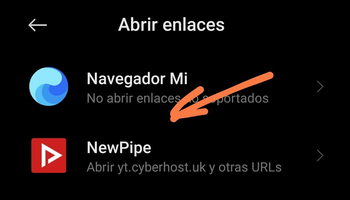

NewPipe es mi aplicación favorita de YouTube y me da mucha rabia que cuando hago click en un enlace, no abra NewPipe por defecto.

Vamos a ver como hacer de NewPipe la aplicación por defecto.
Como puedes ver en las capturas, el secreto se basa en decirle al sistema Android que los Enlaces los abra NewPipe.
En Android puro, es tan sencillo como pulsar prolongadamente sobre el icono de la aplicación y seleccionar la opción Información de la aplicación.

Seleccionaremos los pasos que adjunto en las imágenes.
En Ajustes, busca la opción Administrar Aplicaciones.
Pulsamos los 3 puntos en la parte superior derecha y nos aparecerá todas las aplicaciones con opciones de Aplicaciones predeterminadas.
Seleccionaremos la opción Abrir Enlaces.

Seleccionaremos la Aplicación NewPipe.
La primera vez que abramos un enlace, es probable que NewPipe pregunté si queremos reproducir siempre en modo vídeo. Si seleccionamos esta opción, siempre que abramos un enlace, abrirá el vídeo por defecto
Publicado por Angel el Monday 21 March del 2022
También te puede interesar:
Powered by org-bash-blog
Written in OrgMode with Emacs and converted to HTML with Pandoc

Este obra está bajo una licencia de Creative Commons Reconocimiento-NoComercial-CompartirIgual 4.0 Internacional.